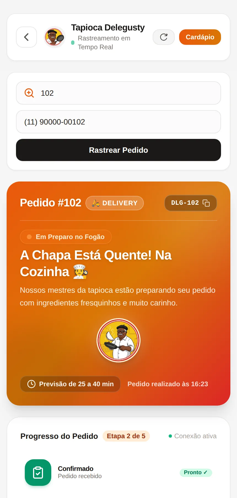
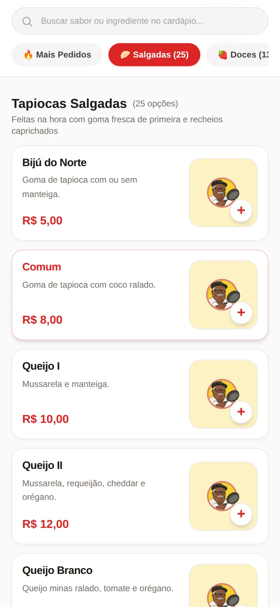
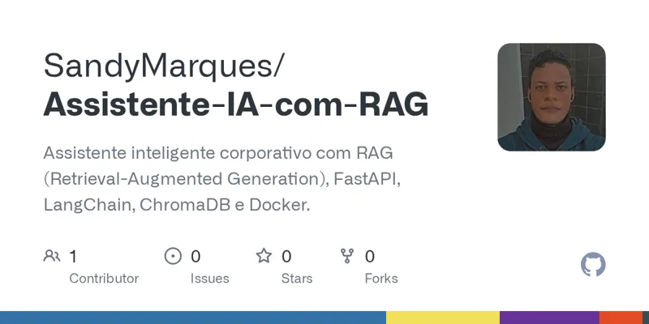
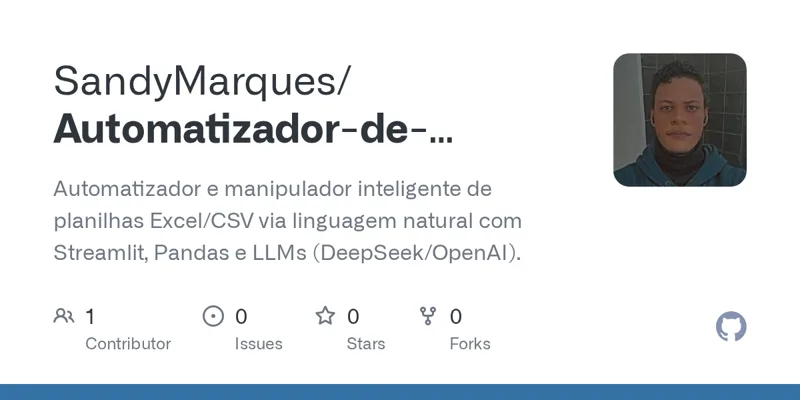
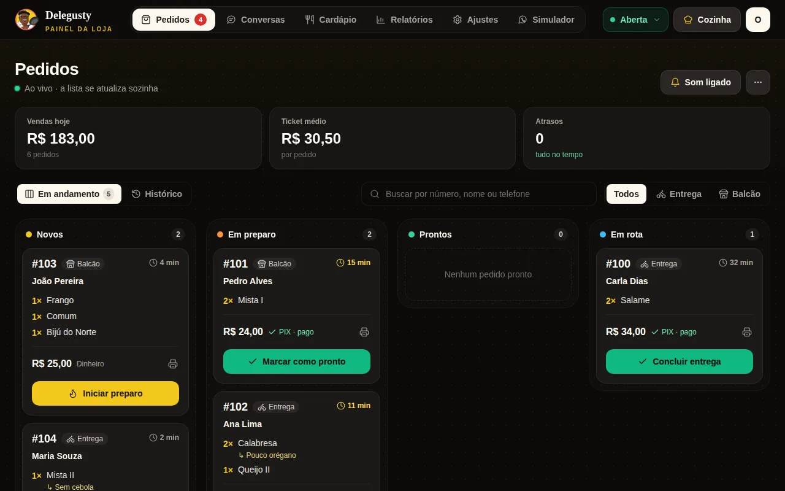
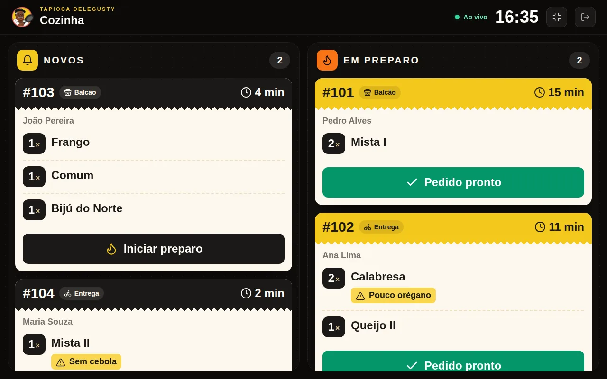
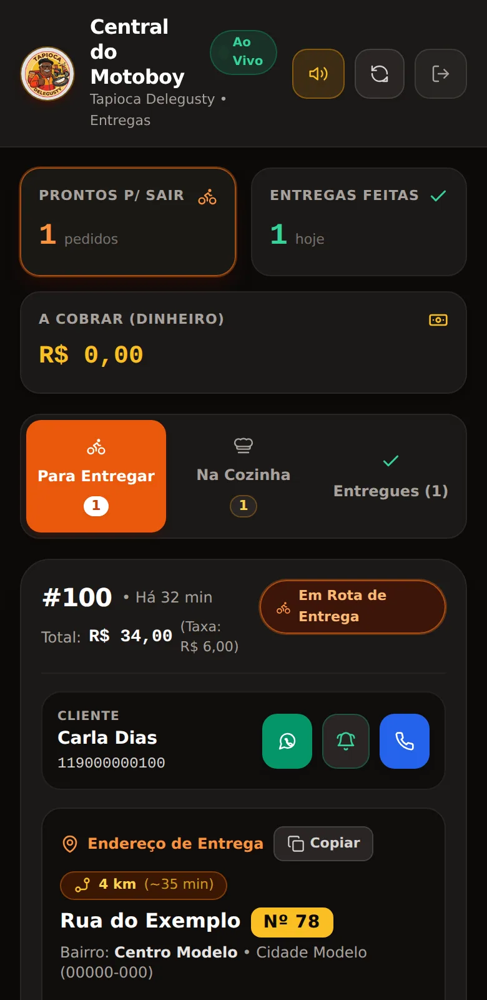

Olá, eu sou Talyson Marques
Analista Administrativo com foco em automação e processos
Há mais de 5 anos na Accenture Brasil eu analiso documentos, organizo planilhas e dados e acompanho prazos e SLAs. Conhecendo a rotina por dentro, uso Python e inteligência artificial para automatizar o que é repetitivo. Formado em Redes de Computadores pelo SENAC-SP.
Praia Grande – SP · Remoto, híbrido ou presencial


Telas do sistema com dados fictícios.
Dois projetos publicados, com código aberto no GitHub, um estudo de caso de um sistema de pedidos completo e cinco em desenvolvimento.

Responde perguntas com base em documentos enviados (PDF, TXT, Markdown, CSV e JSON) e mostra de qual arquivo e página veio cada informação.
Na prática: encontra informações pelo significado, não só pela palavra exata — e a fonte fica visível para conferência.
Tecnologias: Python, FastAPI, LangChain, ChromaDB, Docker.

Limpa, calcula e transforma planilhas (Excel e CSV) a partir de instruções em português. Permite desfazer etapas, voltar à planilha original e exportar em .xlsx e .csv.
Na prática: tira do trabalho manual a preparação repetitiva de planilhas, executando o código gerado em um ambiente restrito.
Tecnologias: Python, Pandas, Streamlit, DeepSeek API.



Do pedido à entrega em um só sistema: cardápio digital, pagamento por PIX com confirmação automática, painel da loja em tempo real, tela da cozinha, app do motoboy e uma atendente virtual no WhatsApp com IA.
Na prática: a atendente virtual conduz o pedido pelo WhatsApp do começo ao fim, com PIX confirmado sozinho, e tudo chega à cozinha e à entrega no mesmo fluxo.
Tecnologias: React, TypeScript, Supabase, PostgreSQL, IA generativa.
Análise automatizada de lotes de documentos (PDF e texto): extração de dados-chave, regras de conformidade e sinalização de inconsistências.
Objetivo: reduzir o tempo de conferência manual e os erros de triagem.
Tecnologias previstas: Python, FastAPI, Pydantic, PdfPlumber, DeepSeek / OpenAI API, Pandas.
Painel centralizado da saúde de serviços, rotinas agendadas e conectividade de rede, com alertas visuais.
Objetivo: evitar falhas silenciosas em processos de segundo plano e dar visibilidade à gestão.
Tecnologias previstas: Python, FastAPI, Docker, Chart.js, SQLite.
Triagem de chamados com categorização por IA, cálculo de horário útil de atendimento e controle preventivo de SLA.
Objetivo: organizar a fila, priorizar chamados críticos e ajudar a cumprir os prazos acordados.
Tecnologias previstas: Python, FastAPI, Supabase / PostgreSQL, LLM, Tailwind.
Serviço em Docker para checar conectividade (ping, portas TCP e validade de certificados SSL), com alertas via webhook.
Objetivo: avisar a equipe de TI antes que uma falha de rede chegue aos usuários.
Tecnologias previstas: Python, Docker Compose, Linux, Bash, Socket/TCP, webhooks (Discord/Telegram).
Cadastro e acompanhamento de vencimentos de certidões, contratos e licenças, com régua escalonada de alertas.
Objetivo: evitar perda de prazos críticos e bloqueios por documentos vencidos.
Tecnologias previstas: Python (FastAPI), SQLite/PostgreSQL, APScheduler, Tailwind CSS.
LocalPraia Grande - SP
FormatoRemoto, híbrido ou presencial
DisponibilidadeAberto a oportunidades
Desde novembro de 2020 na Accenture Brasil (Projeto Vivere), atuo como Analista Administrativo com foco em automação e processos: análise técnica de documentos, estruturação e padronização de dados, triagem e resolução de inconsistências e cumprimento de metas de SLA, qualidade e produtividade.
No dia a dia, uso Python, planilhas avançadas e ferramentas de Inteligência Artificial para reduzir o esforço manual em tarefas repetitivas e acelerar a análise de documentos. A formação em Redes de Computadores pelo SENAC-SP me deu base em infraestrutura, Linux, segurança e resolução metódica de problemas.
Busco oportunidades em automação de processos e operações, suporte técnico e infraestrutura, onde organização, prazos e boa comunicação andem junto com dados e código.
Como trabalho com IA: nos meus projetos uso ferramentas de IA como apoio ao desenvolvimento. Eu defino o que o sistema precisa fazer, acompanho os testes e o coloco em uso real, como no sistema de pedidos da tapiocaria.
Mais de 5 anos na Accenture Brasil, graduação em Redes de Computadores e cursos complementares.
Certificações intermediárias obtidas durante o curso:
Da rotina administrativa à automação, com base em redes e infraestrutura.
Um assistente de IA responde na hora, com base no meu currículo, e mostra projetos, telas e links. Experimente.
Já construí um sistema de pedidos completo para uma tapiocaria e publiquei dois projetos de automação com IA no GitHub. Se o seu negócio precisa de algo parecido, vamos conversar.
Busco oportunidades em automação de processos e operações, suporte técnico e infraestrutura de redes — remoto, híbrido ou presencial, a partir de Praia Grande - SP. Também desenvolvo sites e sistemas sob encomenda: conte sua ideia ao lado.